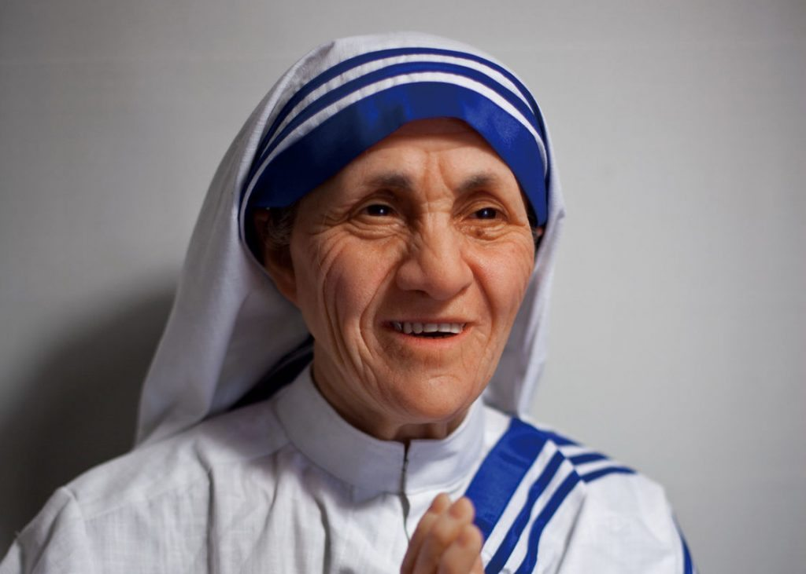
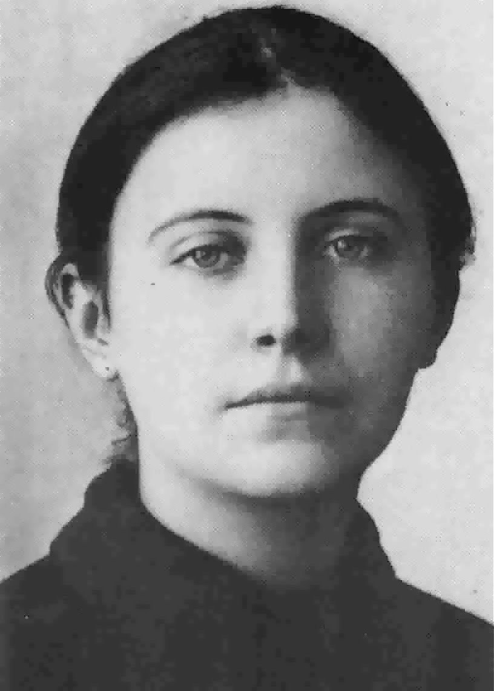
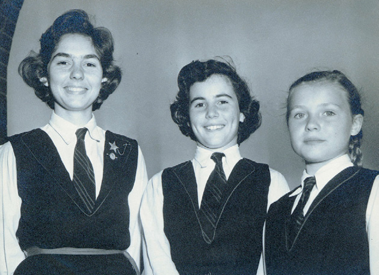
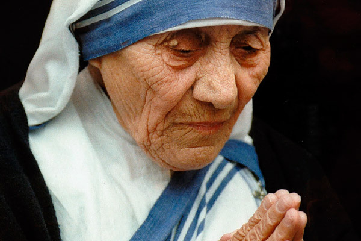

Mother Teresa was born on August 26, 1910, in Skopje, the current capital of the Republic of Macedonia. The following day, she was baptized as Agnes Gonxha Bojaxhiu.
After several years of deteriorating health, including heart, lung and kidney problems, Mother Teresa died on September 5, 1997, at the age of 87.
Mother Teresa’s parents, Nikola and Dranafile Bojaxhiu, were of Albanian descent; her father was an entrepreneur who worked as a construction contractor and a trader of medicines and other goods. The Bojaxhius were a devoutly Catholic family, and Nikola was deeply involved in the local church as well as in city politics as a vocal proponent of Albanian independence.
In 1919, when Mother Teresa — then Agnes — was only eight years old, her father suddenly fell ill and died. While the cause of his death remains unknown, many have speculated that political enemies poisoned him.
In the aftermath of her father's death, Agnes became extraordinarily close to her mother, a pious and compassionate woman who instilled in her daughter a deep commitment to charity. Although by no means wealthy, Drana Bojaxhiu extended an open invitation to the city's destitute to dine with her family. "My child, never eat a single mouthful unless you are sharing it with others," she counseled her daughter. When Agnes asked who the people eating with them were, her mother uniformly responded, "Some of them are our relations, but all of them are our people."
Agnes attended a convent-run primary school and then a state-run secondary school. As a girl, she sang in the local Sacred Heart choir and was often asked to sing solos. The congregation made an annual pilgrimage to the Church of the Black Madonna in Letnice, and it was on one such trip at the age of 12 that she first felt a calling to a religious life. Six years later, in 1928, an 18-year-old Agnes Bojaxhiu decided to become a nun and set off for Ireland to join the Sisters of Loreto in Dublin. It was there that she took the name Sister Mary Teresa after Saint Thérèse of Lisieux.
A year later, Sister Mary Teresa traveled on to Darjeeling, India, for the novitiate period; in May 1931, she made her First Profession of Vows. Afterward she was sent to Calcutta, where she was assigned to teach at Saint Mary's High School for Girls, a school run by the Loreto Sisters and dedicated to teaching girls from the city's poorest Bengali families. Sister Teresa learned to speak both Bengali and Hindi fluently as she taught geography and history and dedicated herself to alleviating the girls' poverty through education.
On May 24, 1937, she took her Final Profession of Vows to a life of poverty, chastity and obedience. As was the custom for Loreto nuns, she took on the title of "Mother" upon making her final vows and thus became known as Mother Teresa. Mother Teresa continued to teach at Saint Mary's, and in 1944 she became the school's principal. Through her kindness, generosity and unfailing commitment to her students' education, she sought to lead them to a life of devotion to Christ. "Give me the strength to be ever the light of their lives, so that I may lead them at last to you," she wrote in prayer.
 Since her death, Mother Teresa has remained in the public spotlight. For her unwavering commitment to aiding those most in need, Mother Teresa stands out as one of the greatest humanitarians of the 20th century. She combined profound empathy and a fervent commitment to her cause with incredible organizational and managerial skills that allowed her to develop a vast and effective international organization of missionaries to help impoverished citizens all across the globe.
Despite the enormous scale of her charitable activities and the millions of lives she touched, to her dying day she held only the most humble conception of her own achievements. Summing up her life in characteristically self-effacing fashion, Mother Teresa said, "By blood, I am Albanian. By citizenship, an Indian. By faith, I am a Catholic nun. As to my calling, I belong to the world. As to my heart, I belong entirely to the Heart of Jesus."